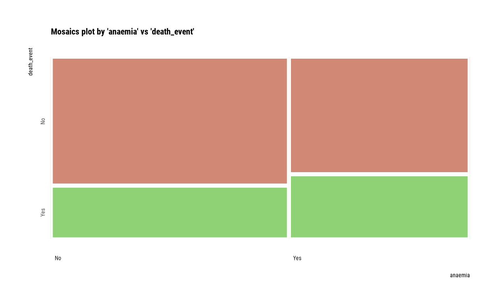
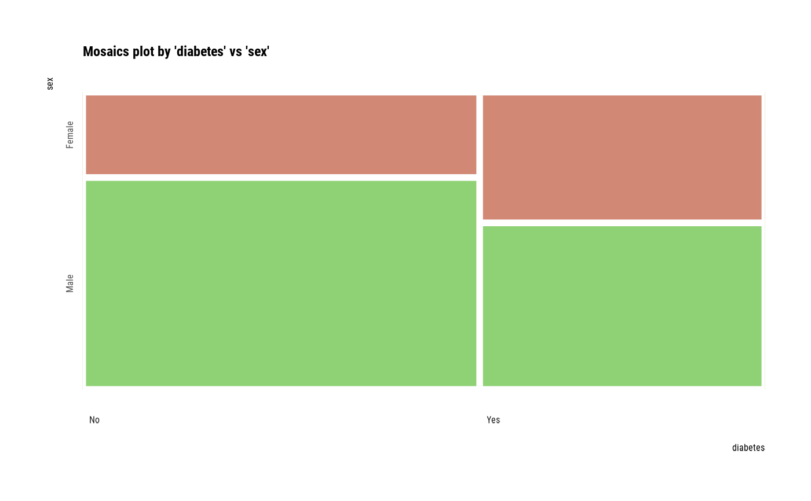

The compare_category() compute information to examine the relationship between categorical variables.
compare_category(.data, ...) # S3 method for data.frame compare_category(.data, ...)
Arguments
| .data | a data.frame or a |
|---|---|
| ... | one or more unquoted expressions separated by commas. You can treat variable names like they are positions. Positive values select variables; negative values to drop variables. These arguments are automatically quoted and evaluated in a context where column names represent column positions. They support unquoting and splicing. |
Value
An object of the class as compare based list. The information to examine the relationship between categorical variables is as follows each components.
var1 : factor. The level of the first variable to compare. 'var1' is the name of the first variable to be compared.
var2 : factor. The level of the second variable to compare. 'var2' is the name of the second variable to be compared.
n : integer. frequency by var1 and var2.
rate : double. relative frequency.
first_rate : double. relative frequency in first variable.
second_rate : double. relative frequency in second variable.
Details
It is important to understand the relationship between categorical variables in EDA. compare_category() compares relations by pair combination of all categorical variables. and return compare_category class that based list object.
Attributes of return object
Attributes of compare_category class is as follows.
variables : character. List of variables selected for comparison.
combination : matrix. It consists of pairs of variables to compare.
See also
Examples
# \donttest{ # Generate data for the example heartfailure2 <- heartfailure heartfailure2[sample(seq(NROW(heartfailure2)), 5), "smoking"] <- NA library(dplyr) # Compare the all categorical variables all_var <- compare_category(heartfailure2) # Print compare_numeric class objects all_var#> $`anaemia vs diabetes` #> # A tibble: 4 x 6 #> anaemia diabetes n rate var1_rate var2_rate #> <fct> <fct> <int> <dbl> <dbl> <dbl> #> 1 No No 98 0.328 0.576 0.563 #> 2 No Yes 72 0.241 0.424 0.576 #> 3 Yes No 76 0.254 0.589 0.437 #> 4 Yes Yes 53 0.177 0.411 0.424 #> #> $`anaemia vs hblood_pressure` #> # A tibble: 4 x 6 #> anaemia hblood_pressure n rate var1_rate var2_rate #> <fct> <fct> <int> <dbl> <dbl> <dbl> #> 1 No No 113 0.378 0.665 0.582 #> 2 No Yes 57 0.191 0.335 0.543 #> 3 Yes No 81 0.271 0.628 0.418 #> 4 Yes Yes 48 0.161 0.372 0.457 #> #> $`anaemia vs sex` #> # A tibble: 4 x 6 #> anaemia sex n rate var1_rate var2_rate #> <fct> <fct> <int> <dbl> <dbl> <dbl> #> 1 No Female 53 0.177 0.312 0.505 #> 2 No Male 117 0.391 0.688 0.603 #> 3 Yes Female 52 0.174 0.403 0.495 #> 4 Yes Male 77 0.258 0.597 0.397 #> #> $`anaemia vs smoking` #> # A tibble: 6 x 6 #> anaemia smoking n rate var1_rate var2_rate #> <fct> <fct> <int> <dbl> <dbl> <dbl> #> 1 No No 107 0.358 0.629 0.535 #> 2 No Yes 61 0.204 0.359 0.649 #> 3 No NA 2 0.00669 0.0118 0.4 #> 4 Yes No 93 0.311 0.721 0.465 #> 5 Yes Yes 33 0.110 0.256 0.351 #> 6 Yes NA 3 0.0100 0.0233 0.6 #> #> $`anaemia vs death_event` #> # A tibble: 4 x 6 #> anaemia death_event n rate var1_rate var2_rate #> <fct> <fct> <int> <dbl> <dbl> <dbl> #> 1 No No 120 0.401 0.706 0.591 #> 2 No Yes 50 0.167 0.294 0.521 #> 3 Yes No 83 0.278 0.643 0.409 #> 4 Yes Yes 46 0.154 0.357 0.479 #> #> $`diabetes vs hblood_pressure` #> # A tibble: 4 x 6 #> diabetes hblood_pressure n rate var1_rate var2_rate #> <fct> <fct> <int> <dbl> <dbl> <dbl> #> 1 No No 112 0.375 0.644 0.577 #> 2 No Yes 62 0.207 0.356 0.590 #> 3 Yes No 82 0.274 0.656 0.423 #> 4 Yes Yes 43 0.144 0.344 0.410 #> #> $`diabetes vs sex` #> # A tibble: 4 x 6 #> diabetes sex n rate var1_rate var2_rate #> <fct> <fct> <int> <dbl> <dbl> <dbl> #> 1 No Female 50 0.167 0.287 0.476 #> 2 No Male 124 0.415 0.713 0.639 #> 3 Yes Female 55 0.184 0.44 0.524 #> 4 Yes Male 70 0.234 0.56 0.361 #> #> $`diabetes vs smoking` #> # A tibble: 6 x 6 #> diabetes smoking n rate var1_rate var2_rate #> <fct> <fct> <int> <dbl> <dbl> <dbl> #> 1 No No 108 0.361 0.621 0.54 #> 2 No Yes 65 0.217 0.374 0.691 #> 3 No NA 1 0.00334 0.00575 0.2 #> 4 Yes No 92 0.308 0.736 0.46 #> 5 Yes Yes 29 0.0970 0.232 0.309 #> 6 Yes NA 4 0.0134 0.032 0.8 #> #> $`diabetes vs death_event` #> # A tibble: 4 x 6 #> diabetes death_event n rate var1_rate var2_rate #> <fct> <fct> <int> <dbl> <dbl> <dbl> #> 1 No No 118 0.395 0.678 0.581 #> 2 No Yes 56 0.187 0.322 0.583 #> 3 Yes No 85 0.284 0.68 0.419 #> 4 Yes Yes 40 0.134 0.32 0.417 #> #> $`hblood_pressure vs sex` #> # A tibble: 4 x 6 #> hblood_pressure sex n rate var1_rate var2_rate #> <fct> <fct> <int> <dbl> <dbl> <dbl> #> 1 No Female 61 0.204 0.314 0.581 #> 2 No Male 133 0.445 0.686 0.686 #> 3 Yes Female 44 0.147 0.419 0.419 #> 4 Yes Male 61 0.204 0.581 0.314 #> #> $`hblood_pressure vs smoking` #> # A tibble: 6 x 6 #> hblood_pressure smoking n rate var1_rate var2_rate #> <fct> <fct> <int> <dbl> <dbl> <dbl> #> 1 No No 127 0.425 0.655 0.635 #> 2 No Yes 64 0.214 0.330 0.681 #> 3 No NA 3 0.0100 0.0155 0.6 #> 4 Yes No 73 0.244 0.695 0.365 #> 5 Yes Yes 30 0.100 0.286 0.319 #> 6 Yes NA 2 0.00669 0.0190 0.4 #> #> $`hblood_pressure vs death_event` #> # A tibble: 4 x 6 #> hblood_pressure death_event n rate var1_rate var2_rate #> <fct> <fct> <int> <dbl> <dbl> <dbl> #> 1 No No 137 0.458 0.706 0.675 #> 2 No Yes 57 0.191 0.294 0.594 #> 3 Yes No 66 0.221 0.629 0.325 #> 4 Yes Yes 39 0.130 0.371 0.406 #> #> $`sex vs smoking` #> # A tibble: 6 x 6 #> sex smoking n rate var1_rate var2_rate #> <fct> <fct> <int> <dbl> <dbl> <dbl> #> 1 Female No 98 0.328 0.933 0.49 #> 2 Female Yes 4 0.0134 0.0381 0.0426 #> 3 Female NA 3 0.0100 0.0286 0.6 #> 4 Male No 102 0.341 0.526 0.51 #> 5 Male Yes 90 0.301 0.464 0.957 #> 6 Male NA 2 0.00669 0.0103 0.4 #> #> $`sex vs death_event` #> # A tibble: 4 x 6 #> sex death_event n rate var1_rate var2_rate #> <fct> <fct> <int> <dbl> <dbl> <dbl> #> 1 Female No 71 0.237 0.676 0.350 #> 2 Female Yes 34 0.114 0.324 0.354 #> 3 Male No 132 0.441 0.680 0.650 #> 4 Male Yes 62 0.207 0.320 0.646 #> #> $`smoking vs death_event` #> # A tibble: 6 x 6 #> smoking death_event n rate var1_rate var2_rate #> <fct> <fct> <int> <dbl> <dbl> <dbl> #> 1 No No 136 0.455 0.68 0.670 #> 2 No Yes 64 0.214 0.32 0.667 #> 3 Yes No 65 0.217 0.691 0.320 #> 4 Yes Yes 29 0.0970 0.309 0.302 #> 5 NA No 2 0.00669 0.4 0.00985 #> 6 NA Yes 3 0.0100 0.6 0.0312 #># Compare the categorical variables that case of joint the death_event variable all_var %>% "["(grep("death_event", names(all_var)))#> $`anaemia vs death_event` #> # A tibble: 4 x 6 #> anaemia death_event n rate var1_rate var2_rate #> <fct> <fct> <int> <dbl> <dbl> <dbl> #> 1 No No 120 0.401 0.706 0.591 #> 2 No Yes 50 0.167 0.294 0.521 #> 3 Yes No 83 0.278 0.643 0.409 #> 4 Yes Yes 46 0.154 0.357 0.479 #> #> $`diabetes vs death_event` #> # A tibble: 4 x 6 #> diabetes death_event n rate var1_rate var2_rate #> <fct> <fct> <int> <dbl> <dbl> <dbl> #> 1 No No 118 0.395 0.678 0.581 #> 2 No Yes 56 0.187 0.322 0.583 #> 3 Yes No 85 0.284 0.68 0.419 #> 4 Yes Yes 40 0.134 0.32 0.417 #> #> $`hblood_pressure vs death_event` #> # A tibble: 4 x 6 #> hblood_pressure death_event n rate var1_rate var2_rate #> <fct> <fct> <int> <dbl> <dbl> <dbl> #> 1 No No 137 0.458 0.706 0.675 #> 2 No Yes 57 0.191 0.294 0.594 #> 3 Yes No 66 0.221 0.629 0.325 #> 4 Yes Yes 39 0.130 0.371 0.406 #> #> $`sex vs death_event` #> # A tibble: 4 x 6 #> sex death_event n rate var1_rate var2_rate #> <fct> <fct> <int> <dbl> <dbl> <dbl> #> 1 Female No 71 0.237 0.676 0.350 #> 2 Female Yes 34 0.114 0.324 0.354 #> 3 Male No 132 0.441 0.680 0.650 #> 4 Male Yes 62 0.207 0.320 0.646 #> #> $`smoking vs death_event` #> # A tibble: 6 x 6 #> smoking death_event n rate var1_rate var2_rate #> <fct> <fct> <int> <dbl> <dbl> <dbl> #> 1 No No 136 0.455 0.68 0.670 #> 2 No Yes 64 0.214 0.32 0.667 #> 3 Yes No 65 0.217 0.691 0.320 #> 4 Yes Yes 29 0.0970 0.309 0.302 #> 5 NA No 2 0.00669 0.4 0.00985 #> 6 NA Yes 3 0.0100 0.6 0.0312 #># Compare the two categorical variables two_var <- compare_category(heartfailure2, smoking, death_event) # Print compare_category class objects two_var#> $`smoking vs death_event` #> # A tibble: 6 x 6 #> smoking death_event n rate var1_rate var2_rate #> <fct> <fct> <int> <dbl> <dbl> <dbl> #> 1 No No 136 0.455 0.68 0.670 #> 2 No Yes 64 0.214 0.32 0.667 #> 3 Yes No 65 0.217 0.691 0.320 #> 4 Yes Yes 29 0.0970 0.309 0.302 #> 5 NA No 2 0.00669 0.4 0.00985 #> 6 NA Yes 3 0.0100 0.6 0.0312 #>#> # A tibble: 4 x 6 #> smoking death_event n rate var1_rate var2_rate #> <fct> <fct> <int> <dbl> <dbl> <dbl> #> 1 No No 136 0.455 0.68 0.670 #> 2 No Yes 64 0.214 0.32 0.667 #> 3 Yes No 65 0.217 0.691 0.320 #> 4 Yes Yes 29 0.0970 0.309 0.302#> ── Contingency tables ──────────────────────────── Number of table is 15 ── #> $`anaemia vs diabetes` #> diabetes #> anaemia No Yes #> No 98 72 #> Yes 76 53 #> #> $`anaemia vs hblood_pressure` #> hblood_pressure #> anaemia No Yes #> No 113 57 #> Yes 81 48 #> #> $`anaemia vs sex` #> sex #> anaemia Female Male #> No 53 117 #> Yes 52 77 #> #> $`anaemia vs smoking` #> smoking #> anaemia No Yes #> No 107 61 #> Yes 93 33 #> #> $`anaemia vs death_event` #> death_event #> anaemia No Yes #> No 120 50 #> Yes 83 46 #> #> $`diabetes vs hblood_pressure` #> hblood_pressure #> diabetes No Yes #> No 112 62 #> Yes 82 43 #> #> $`diabetes vs sex` #> sex #> diabetes Female Male #> No 50 124 #> Yes 55 70 #> #> $`diabetes vs smoking` #> smoking #> diabetes No Yes #> No 108 65 #> Yes 92 29 #> #> $`diabetes vs death_event` #> death_event #> diabetes No Yes #> No 118 56 #> Yes 85 40 #> #> $`hblood_pressure vs sex` #> sex #> hblood_pressure Female Male #> No 61 133 #> Yes 44 61 #> #> $`hblood_pressure vs smoking` #> smoking #> hblood_pressure No Yes #> No 127 64 #> Yes 73 30 #> #> $`hblood_pressure vs death_event` #> death_event #> hblood_pressure No Yes #> No 137 57 #> Yes 66 39 #> #> $`sex vs smoking` #> smoking #> sex No Yes #> Female 98 4 #> Male 102 90 #> #> $`sex vs death_event` #> death_event #> sex No Yes #> Female 71 34 #> Male 132 62 #> #> $`smoking vs death_event` #> death_event #> smoking No Yes #> No 136 64 #> Yes 65 29 #> #> ── Relative contingency tables ─────────────────── Number of table is 15 ── #> $`anaemia vs diabetes` #> diabetes #> anaemia No Yes #> No 0.3277592 0.2408027 #> Yes 0.2541806 0.1772575 #> #> $`anaemia vs hblood_pressure` #> hblood_pressure #> anaemia No Yes #> No 0.3779264 0.1906355 #> Yes 0.2709030 0.1605351 #> #> $`anaemia vs sex` #> sex #> anaemia Female Male #> No 0.1772575 0.3913043 #> Yes 0.1739130 0.2575251 #> #> $`anaemia vs smoking` #> smoking #> anaemia No Yes #> No 0.3639456 0.2074830 #> Yes 0.3163265 0.1122449 #> #> $`anaemia vs death_event` #> death_event #> anaemia No Yes #> No 0.4013378 0.1672241 #> Yes 0.2775920 0.1538462 #> #> $`diabetes vs hblood_pressure` #> hblood_pressure #> diabetes No Yes #> No 0.3745819 0.2073579 #> Yes 0.2742475 0.1438127 #> #> $`diabetes vs sex` #> sex #> diabetes Female Male #> No 0.1672241 0.4147157 #> Yes 0.1839465 0.2341137 #> #> $`diabetes vs smoking` #> smoking #> diabetes No Yes #> No 0.36734694 0.22108844 #> Yes 0.31292517 0.09863946 #> #> $`diabetes vs death_event` #> death_event #> diabetes No Yes #> No 0.3946488 0.1872910 #> Yes 0.2842809 0.1337793 #> #> $`hblood_pressure vs sex` #> sex #> hblood_pressure Female Male #> No 0.2040134 0.4448161 #> Yes 0.1471572 0.2040134 #> #> $`hblood_pressure vs smoking` #> smoking #> hblood_pressure No Yes #> No 0.4319728 0.2176871 #> Yes 0.2482993 0.1020408 #> #> $`hblood_pressure vs death_event` #> death_event #> hblood_pressure No Yes #> No 0.4581940 0.1906355 #> Yes 0.2207358 0.1304348 #> #> $`sex vs smoking` #> smoking #> sex No Yes #> Female 0.33333333 0.01360544 #> Male 0.34693878 0.30612245 #> #> $`sex vs death_event` #> death_event #> sex No Yes #> Female 0.2374582 0.1137124 #> Male 0.4414716 0.2073579 #> #> $`smoking vs death_event` #> death_event #> smoking No Yes #> No 0.46258503 0.21768707 #> Yes 0.22108844 0.09863946 #> #> ── Chi-squared contingency table tests ─────────── Number of table is 15 ── #> variable_1 variable_2 statistic p.value df #> 1 anaemia diabetes 1.035093e-02 9.189634e-01 1 #> 2 anaemia hblood_pressure 2.893564e-01 5.906333e-01 1 #> 3 anaemia sex 2.299464e+00 1.294186e-01 1 #> 4 anaemia smoking 2.940326e+00 8.639331e-02 1 #> 5 anaemia death_event 1.042175e+00 3.073161e-01 1 #> 6 diabetes hblood_pressure 9.476710e-03 9.224497e-01 1 #> 7 diabetes sex 6.783853e+00 9.198613e-03 1 #> 8 diabetes smoking 5.450134e+00 1.956683e-02 1 #> 9 diabetes death_event 2.161684e-30 1.000000e+00 1 #> 10 hblood_pressure sex 2.829289e+00 9.255934e-02 1 #> 11 hblood_pressure smoking 4.063787e-01 5.238133e-01 1 #> 12 hblood_pressure death_event 1.543461e+00 2.141034e-01 1 #> 13 sex smoking 5.454737e+01 1.517458e-13 1 #> 14 sex death_event 0.000000e+00 1.000000e+00 1 #> 15 smoking death_event 3.982985e-03 9.496782e-01 1# Summary by returned objects stat#> $table #> $table$`anaemia vs diabetes` #> diabetes #> anaemia No Yes #> No 98 72 #> Yes 76 53 #> #> $table$`anaemia vs hblood_pressure` #> hblood_pressure #> anaemia No Yes #> No 113 57 #> Yes 81 48 #> #> $table$`anaemia vs sex` #> sex #> anaemia Female Male #> No 53 117 #> Yes 52 77 #> #> $table$`anaemia vs smoking` #> smoking #> anaemia No Yes #> No 107 61 #> Yes 93 33 #> #> $table$`anaemia vs death_event` #> death_event #> anaemia No Yes #> No 120 50 #> Yes 83 46 #> #> $table$`diabetes vs hblood_pressure` #> hblood_pressure #> diabetes No Yes #> No 112 62 #> Yes 82 43 #> #> $table$`diabetes vs sex` #> sex #> diabetes Female Male #> No 50 124 #> Yes 55 70 #> #> $table$`diabetes vs smoking` #> smoking #> diabetes No Yes #> No 108 65 #> Yes 92 29 #> #> $table$`diabetes vs death_event` #> death_event #> diabetes No Yes #> No 118 56 #> Yes 85 40 #> #> $table$`hblood_pressure vs sex` #> sex #> hblood_pressure Female Male #> No 61 133 #> Yes 44 61 #> #> $table$`hblood_pressure vs smoking` #> smoking #> hblood_pressure No Yes #> No 127 64 #> Yes 73 30 #> #> $table$`hblood_pressure vs death_event` #> death_event #> hblood_pressure No Yes #> No 137 57 #> Yes 66 39 #> #> $table$`sex vs smoking` #> smoking #> sex No Yes #> Female 98 4 #> Male 102 90 #> #> $table$`sex vs death_event` #> death_event #> sex No Yes #> Female 71 34 #> Male 132 62 #> #> $table$`smoking vs death_event` #> death_event #> smoking No Yes #> No 136 64 #> Yes 65 29 #> #> #> $relative #> $relative$`anaemia vs diabetes` #> diabetes #> anaemia No Yes #> No 0.3277592 0.2408027 #> Yes 0.2541806 0.1772575 #> #> $relative$`anaemia vs hblood_pressure` #> hblood_pressure #> anaemia No Yes #> No 0.3779264 0.1906355 #> Yes 0.2709030 0.1605351 #> #> $relative$`anaemia vs sex` #> sex #> anaemia Female Male #> No 0.1772575 0.3913043 #> Yes 0.1739130 0.2575251 #> #> $relative$`anaemia vs smoking` #> smoking #> anaemia No Yes #> No 0.3639456 0.2074830 #> Yes 0.3163265 0.1122449 #> #> $relative$`anaemia vs death_event` #> death_event #> anaemia No Yes #> No 0.4013378 0.1672241 #> Yes 0.2775920 0.1538462 #> #> $relative$`diabetes vs hblood_pressure` #> hblood_pressure #> diabetes No Yes #> No 0.3745819 0.2073579 #> Yes 0.2742475 0.1438127 #> #> $relative$`diabetes vs sex` #> sex #> diabetes Female Male #> No 0.1672241 0.4147157 #> Yes 0.1839465 0.2341137 #> #> $relative$`diabetes vs smoking` #> smoking #> diabetes No Yes #> No 0.36734694 0.22108844 #> Yes 0.31292517 0.09863946 #> #> $relative$`diabetes vs death_event` #> death_event #> diabetes No Yes #> No 0.3946488 0.1872910 #> Yes 0.2842809 0.1337793 #> #> $relative$`hblood_pressure vs sex` #> sex #> hblood_pressure Female Male #> No 0.2040134 0.4448161 #> Yes 0.1471572 0.2040134 #> #> $relative$`hblood_pressure vs smoking` #> smoking #> hblood_pressure No Yes #> No 0.4319728 0.2176871 #> Yes 0.2482993 0.1020408 #> #> $relative$`hblood_pressure vs death_event` #> death_event #> hblood_pressure No Yes #> No 0.4581940 0.1906355 #> Yes 0.2207358 0.1304348 #> #> $relative$`sex vs smoking` #> smoking #> sex No Yes #> Female 0.33333333 0.01360544 #> Male 0.34693878 0.30612245 #> #> $relative$`sex vs death_event` #> death_event #> sex No Yes #> Female 0.2374582 0.1137124 #> Male 0.4414716 0.2073579 #> #> $relative$`smoking vs death_event` #> death_event #> smoking No Yes #> No 0.46258503 0.21768707 #> Yes 0.22108844 0.09863946 #> #> #> $chisq #> variable_1 variable_2 statistic p.value df #> 1 anaemia diabetes 1.035093e-02 9.189634e-01 1 #> 2 anaemia hblood_pressure 2.893564e-01 5.906333e-01 1 #> 3 anaemia sex 2.299464e+00 1.294186e-01 1 #> 4 anaemia smoking 2.940326e+00 8.639331e-02 1 #> 5 anaemia death_event 1.042175e+00 3.073161e-01 1 #> 6 diabetes hblood_pressure 9.476710e-03 9.224497e-01 1 #> 7 diabetes sex 6.783853e+00 9.198613e-03 1 #> 8 diabetes smoking 5.450134e+00 1.956683e-02 1 #> 9 diabetes death_event 2.161684e-30 1.000000e+00 1 #> 10 hblood_pressure sex 2.829289e+00 9.255934e-02 1 #> 11 hblood_pressure smoking 4.063787e-01 5.238133e-01 1 #> 12 hblood_pressure death_event 1.543461e+00 2.141034e-01 1 #> 13 sex smoking 5.454737e+01 1.517458e-13 1 #> 14 sex death_event 0.000000e+00 1.000000e+00 1 #> 15 smoking death_event 3.982985e-03 9.496782e-01 1 #># component of table stat$table#> $`anaemia vs diabetes` #> diabetes #> anaemia No Yes #> No 98 72 #> Yes 76 53 #> #> $`anaemia vs hblood_pressure` #> hblood_pressure #> anaemia No Yes #> No 113 57 #> Yes 81 48 #> #> $`anaemia vs sex` #> sex #> anaemia Female Male #> No 53 117 #> Yes 52 77 #> #> $`anaemia vs smoking` #> smoking #> anaemia No Yes #> No 107 61 #> Yes 93 33 #> #> $`anaemia vs death_event` #> death_event #> anaemia No Yes #> No 120 50 #> Yes 83 46 #> #> $`diabetes vs hblood_pressure` #> hblood_pressure #> diabetes No Yes #> No 112 62 #> Yes 82 43 #> #> $`diabetes vs sex` #> sex #> diabetes Female Male #> No 50 124 #> Yes 55 70 #> #> $`diabetes vs smoking` #> smoking #> diabetes No Yes #> No 108 65 #> Yes 92 29 #> #> $`diabetes vs death_event` #> death_event #> diabetes No Yes #> No 118 56 #> Yes 85 40 #> #> $`hblood_pressure vs sex` #> sex #> hblood_pressure Female Male #> No 61 133 #> Yes 44 61 #> #> $`hblood_pressure vs smoking` #> smoking #> hblood_pressure No Yes #> No 127 64 #> Yes 73 30 #> #> $`hblood_pressure vs death_event` #> death_event #> hblood_pressure No Yes #> No 137 57 #> Yes 66 39 #> #> $`sex vs smoking` #> smoking #> sex No Yes #> Female 98 4 #> Male 102 90 #> #> $`sex vs death_event` #> death_event #> sex No Yes #> Female 71 34 #> Male 132 62 #> #> $`smoking vs death_event` #> death_event #> smoking No Yes #> No 136 64 #> Yes 65 29 #># component of chi-square test stat$chisq#> variable_1 variable_2 statistic p.value df #> 1 anaemia diabetes 1.035093e-02 9.189634e-01 1 #> 2 anaemia hblood_pressure 2.893564e-01 5.906333e-01 1 #> 3 anaemia sex 2.299464e+00 1.294186e-01 1 #> 4 anaemia smoking 2.940326e+00 8.639331e-02 1 #> 5 anaemia death_event 1.042175e+00 3.073161e-01 1 #> 6 diabetes hblood_pressure 9.476710e-03 9.224497e-01 1 #> 7 diabetes sex 6.783853e+00 9.198613e-03 1 #> 8 diabetes smoking 5.450134e+00 1.956683e-02 1 #> 9 diabetes death_event 2.161684e-30 1.000000e+00 1 #> 10 hblood_pressure sex 2.829289e+00 9.255934e-02 1 #> 11 hblood_pressure smoking 4.063787e-01 5.238133e-01 1 #> 12 hblood_pressure death_event 1.543461e+00 2.141034e-01 1 #> 13 sex smoking 5.454737e+01 1.517458e-13 1 #> 14 sex death_event 0.000000e+00 1.000000e+00 1 #> 15 smoking death_event 3.982985e-03 9.496782e-01 1#> ── Chi-squared contingency table tests ─────────── Number of table is 15 ── #> variable_1 variable_2 statistic p.value df #> 1 anaemia diabetes 1.035093e-02 9.189634e-01 1 #> 2 anaemia hblood_pressure 2.893564e-01 5.906333e-01 1 #> 3 anaemia sex 2.299464e+00 1.294186e-01 1 #> 4 anaemia smoking 2.940326e+00 8.639331e-02 1 #> 5 anaemia death_event 1.042175e+00 3.073161e-01 1 #> 6 diabetes hblood_pressure 9.476710e-03 9.224497e-01 1 #> 7 diabetes sex 6.783853e+00 9.198613e-03 1 #> 8 diabetes smoking 5.450134e+00 1.956683e-02 1 #> 9 diabetes death_event 2.161684e-30 1.000000e+00 1 #> 10 hblood_pressure sex 2.829289e+00 9.255934e-02 1 #> 11 hblood_pressure smoking 4.063787e-01 5.238133e-01 1 #> 12 hblood_pressure death_event 1.543461e+00 2.141034e-01 1 #> 13 sex smoking 5.454737e+01 1.517458e-13 1 #> 14 sex death_event 0.000000e+00 1.000000e+00 1 #> 15 smoking death_event 3.982985e-03 9.496782e-01 1#> ── Chi-squared contingency table tests ──────────── Number of table is 2 ── #> variable_1 variable_2 statistic p.value df #> 1 anaemia diabetes 0.01035093 0.9189634 1 #> 2 anaemia sex 2.29946450 0.1294186 1#> ── Relative contingency tables ─────────────────── Number of table is 15 ── #> $`anaemia vs diabetes` #> diabetes #> anaemia No Yes #> No 0.3277592 0.2408027 #> Yes 0.2541806 0.1772575 #> #> $`anaemia vs hblood_pressure` #> hblood_pressure #> anaemia No Yes #> No 0.3779264 0.1906355 #> Yes 0.2709030 0.1605351 #> #> $`anaemia vs sex` #> sex #> anaemia Female Male #> No 0.1772575 0.3913043 #> Yes 0.1739130 0.2575251 #> #> $`anaemia vs smoking` #> smoking #> anaemia No Yes #> No 0.3639456 0.2074830 #> Yes 0.3163265 0.1122449 #> #> $`anaemia vs death_event` #> death_event #> anaemia No Yes #> No 0.4013378 0.1672241 #> Yes 0.2775920 0.1538462 #> #> $`diabetes vs hblood_pressure` #> hblood_pressure #> diabetes No Yes #> No 0.3745819 0.2073579 #> Yes 0.2742475 0.1438127 #> #> $`diabetes vs sex` #> sex #> diabetes Female Male #> No 0.1672241 0.4147157 #> Yes 0.1839465 0.2341137 #> #> $`diabetes vs smoking` #> smoking #> diabetes No Yes #> No 0.36734694 0.22108844 #> Yes 0.31292517 0.09863946 #> #> $`diabetes vs death_event` #> death_event #> diabetes No Yes #> No 0.3946488 0.1872910 #> Yes 0.2842809 0.1337793 #> #> $`hblood_pressure vs sex` #> sex #> hblood_pressure Female Male #> No 0.2040134 0.4448161 #> Yes 0.1471572 0.2040134 #> #> $`hblood_pressure vs smoking` #> smoking #> hblood_pressure No Yes #> No 0.4319728 0.2176871 #> Yes 0.2482993 0.1020408 #> #> $`hblood_pressure vs death_event` #> death_event #> hblood_pressure No Yes #> No 0.4581940 0.1906355 #> Yes 0.2207358 0.1304348 #> #> $`sex vs smoking` #> smoking #> sex No Yes #> Female 0.33333333 0.01360544 #> Male 0.34693878 0.30612245 #> #> $`sex vs death_event` #> death_event #> sex No Yes #> Female 0.2374582 0.1137124 #> Male 0.4414716 0.2073579 #> #> $`smoking vs death_event` #> death_event #> smoking No Yes #> No 0.46258503 0.21768707 #> Yes 0.22108844 0.09863946 #>#> ── Contingency tables ──────────────────────────── Number of table is 15 ── #> $`anaemia vs diabetes` #> diabetes #> anaemia No Yes #> No 98 72 #> Yes 76 53 #> #> $`anaemia vs hblood_pressure` #> hblood_pressure #> anaemia No Yes #> No 113 57 #> Yes 81 48 #> #> $`anaemia vs sex` #> sex #> anaemia Female Male #> No 53 117 #> Yes 52 77 #> #> $`anaemia vs smoking` #> smoking #> anaemia No Yes #> No 107 61 #> Yes 93 33 #> #> $`anaemia vs death_event` #> death_event #> anaemia No Yes #> No 120 50 #> Yes 83 46 #> #> $`diabetes vs hblood_pressure` #> hblood_pressure #> diabetes No Yes #> No 112 62 #> Yes 82 43 #> #> $`diabetes vs sex` #> sex #> diabetes Female Male #> No 50 124 #> Yes 55 70 #> #> $`diabetes vs smoking` #> smoking #> diabetes No Yes #> No 108 65 #> Yes 92 29 #> #> $`diabetes vs death_event` #> death_event #> diabetes No Yes #> No 118 56 #> Yes 85 40 #> #> $`hblood_pressure vs sex` #> sex #> hblood_pressure Female Male #> No 61 133 #> Yes 44 61 #> #> $`hblood_pressure vs smoking` #> smoking #> hblood_pressure No Yes #> No 127 64 #> Yes 73 30 #> #> $`hblood_pressure vs death_event` #> death_event #> hblood_pressure No Yes #> No 137 57 #> Yes 66 39 #> #> $`sex vs smoking` #> smoking #> sex No Yes #> Female 98 4 #> Male 102 90 #> #> $`sex vs death_event` #> death_event #> sex No Yes #> Female 71 34 #> Male 132 62 #> #> $`smoking vs death_event` #> death_event #> smoking No Yes #> No 136 64 #> Yes 65 29 #>#> ── Contingency tables ──────────────────────────── Number of table is 15 ── #> $`anaemia vs diabetes` #> diabetes #> anaemia No Yes <Total> #> No 98 72 170 #> Yes 76 53 129 #> <Total> 174 125 299 #> #> $`anaemia vs hblood_pressure` #> hblood_pressure #> anaemia No Yes <Total> #> No 113 57 170 #> Yes 81 48 129 #> <Total> 194 105 299 #> #> $`anaemia vs sex` #> sex #> anaemia Female Male <Total> #> No 53 117 170 #> Yes 52 77 129 #> <Total> 105 194 299 #> #> $`anaemia vs smoking` #> smoking #> anaemia No Yes <Total> #> No 107 61 168 #> Yes 93 33 126 #> <Total> 200 94 294 #> #> $`anaemia vs death_event` #> death_event #> anaemia No Yes <Total> #> No 120 50 170 #> Yes 83 46 129 #> <Total> 203 96 299 #> #> $`diabetes vs hblood_pressure` #> hblood_pressure #> diabetes No Yes <Total> #> No 112 62 174 #> Yes 82 43 125 #> <Total> 194 105 299 #> #> $`diabetes vs sex` #> sex #> diabetes Female Male <Total> #> No 50 124 174 #> Yes 55 70 125 #> <Total> 105 194 299 #> #> $`diabetes vs smoking` #> smoking #> diabetes No Yes <Total> #> No 108 65 173 #> Yes 92 29 121 #> <Total> 200 94 294 #> #> $`diabetes vs death_event` #> death_event #> diabetes No Yes <Total> #> No 118 56 174 #> Yes 85 40 125 #> <Total> 203 96 299 #> #> $`hblood_pressure vs sex` #> sex #> hblood_pressure Female Male <Total> #> No 61 133 194 #> Yes 44 61 105 #> <Total> 105 194 299 #> #> $`hblood_pressure vs smoking` #> smoking #> hblood_pressure No Yes <Total> #> No 127 64 191 #> Yes 73 30 103 #> <Total> 200 94 294 #> #> $`hblood_pressure vs death_event` #> death_event #> hblood_pressure No Yes <Total> #> No 137 57 194 #> Yes 66 39 105 #> <Total> 203 96 299 #> #> $`sex vs smoking` #> smoking #> sex No Yes <Total> #> Female 98 4 102 #> Male 102 90 192 #> <Total> 200 94 294 #> #> $`sex vs death_event` #> death_event #> sex No Yes <Total> #> Female 71 34 105 #> Male 132 62 194 #> <Total> 203 96 299 #> #> $`smoking vs death_event` #> death_event #> smoking No Yes <Total> #> No 136 64 200 #> Yes 65 29 94 #> <Total> 201 93 294 #>margin#> $`anaemia vs diabetes` #> diabetes #> anaemia No Yes <Total> #> No 98 72 170 #> Yes 76 53 129 #> <Total> 174 125 299 #> #> $`anaemia vs hblood_pressure` #> hblood_pressure #> anaemia No Yes <Total> #> No 113 57 170 #> Yes 81 48 129 #> <Total> 194 105 299 #> #> $`anaemia vs sex` #> sex #> anaemia Female Male <Total> #> No 53 117 170 #> Yes 52 77 129 #> <Total> 105 194 299 #> #> $`anaemia vs smoking` #> smoking #> anaemia No Yes <Total> #> No 107 61 168 #> Yes 93 33 126 #> <Total> 200 94 294 #> #> $`anaemia vs death_event` #> death_event #> anaemia No Yes <Total> #> No 120 50 170 #> Yes 83 46 129 #> <Total> 203 96 299 #> #> $`diabetes vs hblood_pressure` #> hblood_pressure #> diabetes No Yes <Total> #> No 112 62 174 #> Yes 82 43 125 #> <Total> 194 105 299 #> #> $`diabetes vs sex` #> sex #> diabetes Female Male <Total> #> No 50 124 174 #> Yes 55 70 125 #> <Total> 105 194 299 #> #> $`diabetes vs smoking` #> smoking #> diabetes No Yes <Total> #> No 108 65 173 #> Yes 92 29 121 #> <Total> 200 94 294 #> #> $`diabetes vs death_event` #> death_event #> diabetes No Yes <Total> #> No 118 56 174 #> Yes 85 40 125 #> <Total> 203 96 299 #> #> $`hblood_pressure vs sex` #> sex #> hblood_pressure Female Male <Total> #> No 61 133 194 #> Yes 44 61 105 #> <Total> 105 194 299 #> #> $`hblood_pressure vs smoking` #> smoking #> hblood_pressure No Yes <Total> #> No 127 64 191 #> Yes 73 30 103 #> <Total> 200 94 294 #> #> $`hblood_pressure vs death_event` #> death_event #> hblood_pressure No Yes <Total> #> No 137 57 194 #> Yes 66 39 105 #> <Total> 203 96 299 #> #> $`sex vs smoking` #> smoking #> sex No Yes <Total> #> Female 98 4 102 #> Male 102 90 192 #> <Total> 200 94 294 #> #> $`sex vs death_event` #> death_event #> sex No Yes <Total> #> Female 71 34 105 #> Male 132 62 194 #> <Total> 203 96 299 #> #> $`smoking vs death_event` #> death_event #> smoking No Yes <Total> #> No 136 64 200 #> Yes 65 29 94 #> <Total> 201 93 294 #>#> ── Chi-squared contingency table tests ──────────── Number of table is 1 ── #> variable_1 variable_2 statistic p.value df #> 1 smoking death_event 0.003982985 0.9496782 1#> variable_1 variable_2 statistic p.value df #> 1 anaemia diabetes 1.035093e-02 9.189634e-01 1 #> 2 anaemia hblood_pressure 2.893564e-01 5.906333e-01 1 #> 3 anaemia sex 2.299464e+00 1.294186e-01 1 #> 4 anaemia smoking 2.940326e+00 8.639331e-02 1 #> 5 anaemia death_event 1.042175e+00 3.073161e-01 1 #> 6 diabetes hblood_pressure 9.476710e-03 9.224497e-01 1 #> 7 diabetes sex 6.783853e+00 9.198613e-03 1 #> 8 diabetes smoking 5.450134e+00 1.956683e-02 1 #> 9 diabetes death_event 2.161684e-30 1.000000e+00 1 #> 10 hblood_pressure sex 2.829289e+00 9.255934e-02 1 #> 11 hblood_pressure smoking 4.063787e-01 5.238133e-01 1 #> 12 hblood_pressure death_event 1.543461e+00 2.141034e-01 1 #> 13 sex smoking 5.454737e+01 1.517458e-13 1 #> 14 sex death_event 0.000000e+00 1.000000e+00 1 #> 15 smoking death_event 3.982985e-03 9.496782e-01 1#' # Using pipes & dplyr ------------------------- # If you want to use dplyr, set verbose to FALSE summary(all_var, "chisq", verbose = FALSE) %>% filter(p.value < 0.26)#> variable_1 variable_2 statistic p.value df #> 1 anaemia sex 2.299464 1.294186e-01 1 #> 2 anaemia smoking 2.940326 8.639331e-02 1 #> 3 diabetes sex 6.783853 9.198613e-03 1 #> 4 diabetes smoking 5.450134 1.956683e-02 1 #> 5 hblood_pressure sex 2.829289 9.255934e-02 1 #> 6 hblood_pressure death_event 1.543461 2.141034e-01 1 #> 7 sex smoking 54.547368 1.517458e-13 1# Extract component from list by index summary(all_var, "table", na.rm = TRUE, verbose = FALSE) %>% "[["(1)#> diabetes #> anaemia No Yes #> No 98 72 #> Yes 76 53# Extract component from list by name summary(all_var, "table", na.rm = TRUE, verbose = FALSE) %>% "[["("smoking vs death_event")#> death_event #> smoking No Yes #> No 136 64 #> Yes 65 29# }